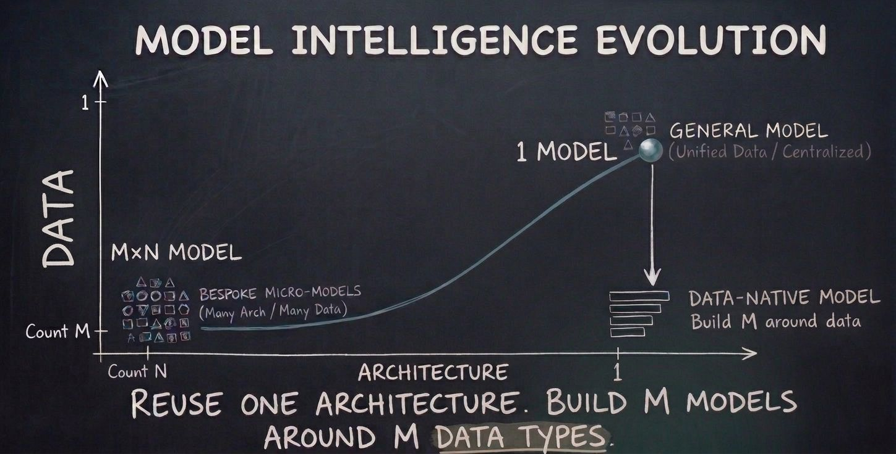

Why Architecture Convergence is Not Model Convergence
We have come a long way from the era of millions of bespoke machine learning models. A decade ago, every specialized problem required its own hand-crafted pipeline: convolutional filters for visual features, recurrent units for temporal signals, random forests for tabular records, and heuristic post-processing to stitch them together. That explosion of fragile point solutions was the natural outcome of a massive cross-product between custom architectures and domain-specific data. Every niche problem spawned a custom pipeline that broke the moment real-world distributions shifted.
Recently, however, the industry pendulum swung violently to the opposite extreme. The prevailing narrative today suggests that we should solve every real-world problem with a single, gigantic, closed generalist model accessed through an API. If it fails, add more prompt engineering. If that still fails, wrap it in an agentic loop, a synthetic prompt harness, or an orchestration framework.
When you funnel high-velocity enterprise telemetry through third-party generalist models via prompt loops, you incur a double loss: you surrender your most valuable domain data to an external provider, and you never actually own the resulting intelligence. It is a perpetual renting cycle with compounding latency, cost, and governance liabilities.
Architecture Convergence vs. Model Convergence
My argument is simple: we are conflating architecture convergence with model convergence.

The decoder-only autoregressive transformer is arguably the most scalable, elegant computational abstraction discovered in modern computing. Its attention dynamics, KV-caching efficiency, and parallelizable pretraining routines represent genuine architecture convergence. But adopting this universal architecture does not imply that everyone must query the exact same multi-trillion parameter monolithic model in the cloud.
During my PhD at UT Austin working on multimodal wireless sensing and mobile computing, we repeatedly observed that physical signals (backscatter phase shifts, acoustic chirps, mmWave Doppler reflections) carry strict physical invariants. You cannot treat RF phase measurements or protocol state machines like conversational natural language. The laws of multipath propagation, signal attenuation, antenna impedance, and 802.11 state transitions are deterministic constraints. Trying to prompt a generic language model into respecting these physical laws is an uphill, losing battle.
The Data-Native Path
The true win-win middle ground is straightforward:
- Exploit the architecture: Reuse the simplistic genius of decoder-only transformers and the mature training, quantization, and serving tooling surrounding them.
- Own your data: Train your own domain-native generative models directly on your proprietary telemetry, traces, and operational signals.
- Build from first principles: Incorporate domain physics and protocol invariants directly into tokenization, representation schemes, and loss functions.
- Eliminate software wrappers: Stop building fragile regex scaffolds and retry harnesses to compensate for a generalist model's lack of domain intuition.
"When algorithms are open and widely known, your true defensible moat is proprietary data, domain verification, and edge distribution. If you master those three, you should never rent out the intelligence layer to a fickle third party."
Putting Philosophy into Practice on Wireless Access Points
Within Cisco Meraki, we are putting this data-native philosophy directly into practice. Working alongside colleagues like Peiman Amini and Niloofar Bahadori, we are designing custom, sub-1B parameter generative models trained directly on access point telemetry, packet captures, and RF environments.
Enterprise wireless access points process millions of frame transmissions per second across multiple 2.4 GHz, 5 GHz, and 6 GHz channels. They constantly track Clear Channel Assessment (CCA) thresholds, Received Signal Strength Indicator (RSSI) variances, beamforming feedback matrices, and client roaming handoffs. A model pre-trained natively on these telemetry streams develops an innate understanding of network physics.
These models run close to the metal, right where network events unfold. Because they are pre-trained on domain-native distributions, they require a fraction of the compute and memory of generalist LLMs while delivering dramatically higher accuracy on anomaly detection, predictive forecasting, and automated root-cause analysis with zero cloud round-trip delay.
The future of applied AI will not be dominated by a single remote model ruling every enterprise workflow. It will be powered by an interconnected ecosystem of compact, data-native models that enterprises train, control, and truly own.